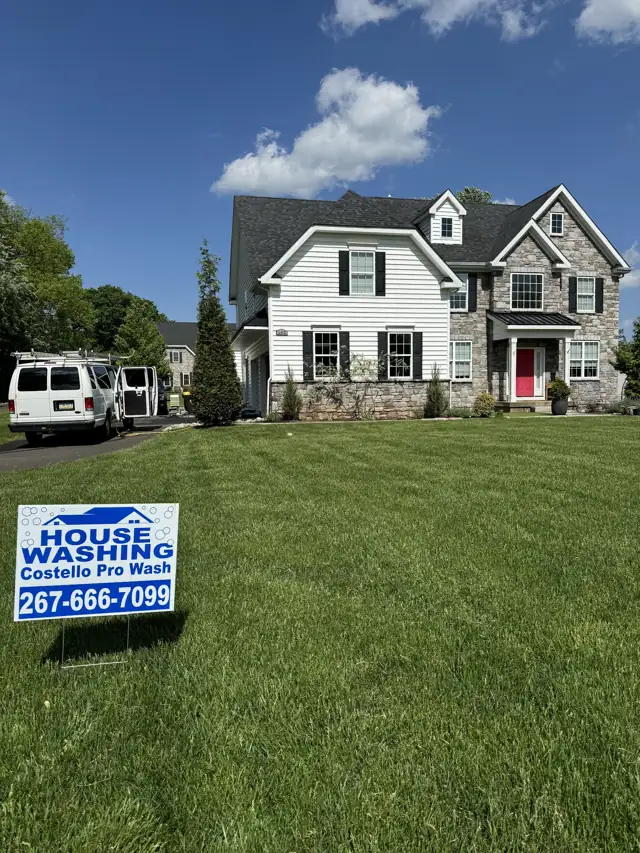
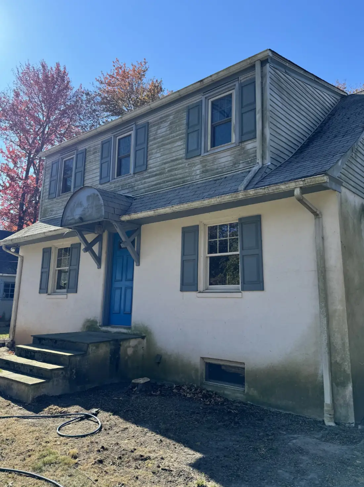
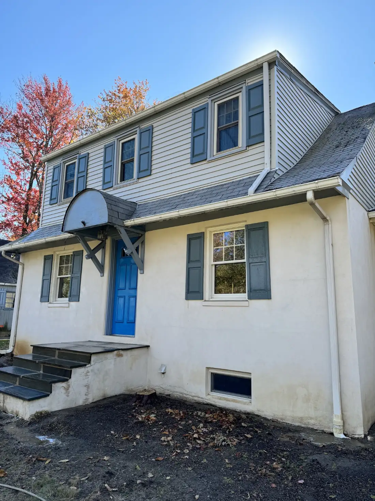
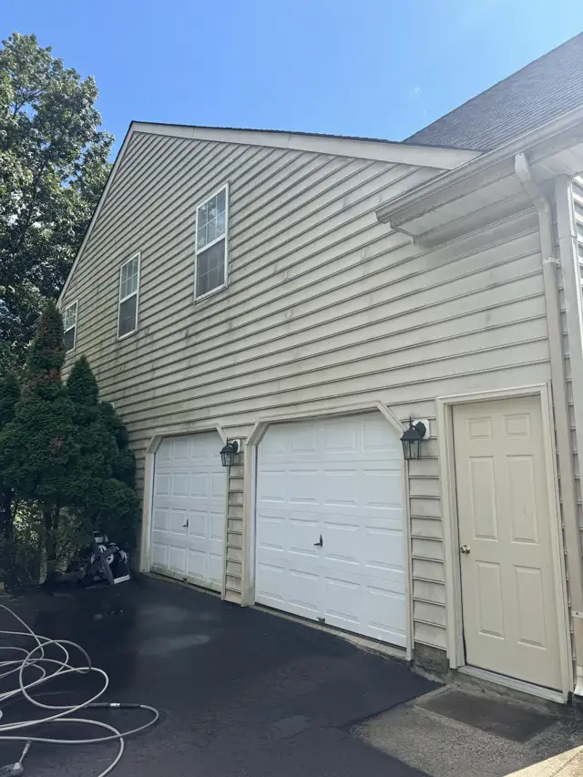
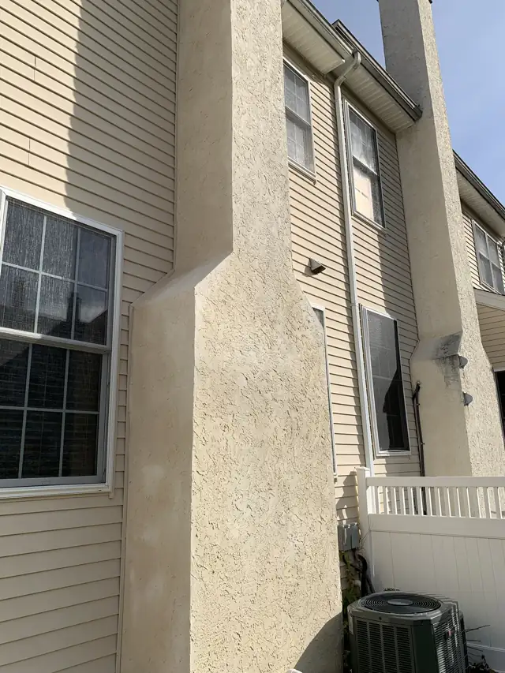
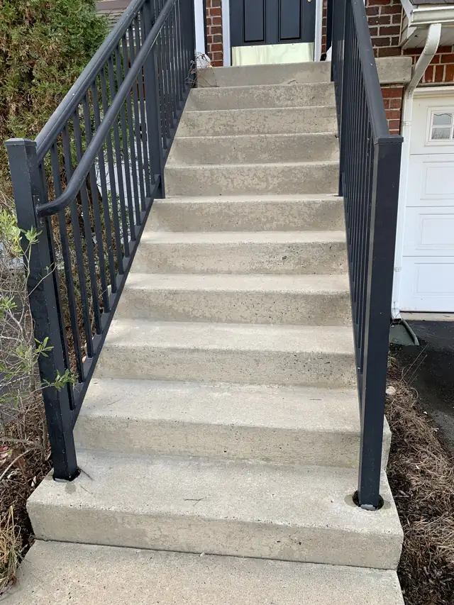

Fast and accurate communication. Great job. Highly recommend. Did our house and stucco chimney. I will have him back in the spring for concrete work.
Mike repliedThank you for the review Christine. It was great meeting you and your husband.
—Pressure & soft washing · Bucks County, PA
House washing, decks, fences, patios and concrete for homes across Bucks County. Owner-operated by Mike since 2020, so you deal directly with the owner.
Two quick steps. Mike gets back to you himself.
Rather talk? Call or text (267) 666-7099. Open daily 9 AM to 9 PM.

01Before & after
Real Costello jobs, photographed before and after. Drag the slider to see the difference on the same wall.


BeforeAfterCape Cod, siding and stucco · House wash
Dormer siding and stucco, washed. These photos were posted by the homeowner with her Google review.
“Prompt, Professional service and left us with an amazing result! The house looks pristine!”Wendy S. · Google · Oct 2024
Cape Cod, siding and stucco
Green algae along the lower siding, washed off.
Stucco home with arched windows
Streaking under the window and along the stone ledge, soft washed.
Stucco home with arched windows
Algae across the full height of the wall, soft washed top to bottom.
02The method
High pressure is the right tool for concrete and the wrong one for siding. Every job starts with the surface.
Soft wash
A cleaning solution sits for about five minutes, then rinses off at low pressure. The solution does the work, not the pressure.
Matched to the material
Decks and fences are cleaned to suit the wood and its condition, not with one setting for everything.
Pressure wash
Concrete and pavers can take real pressure, which is what it takes to lift years of staining.
03Services



04Our work
12 more photos from Bucks County jobs. Tap any photo to see it full size.
Some photos were posted by customers with their Google reviews and are credited to them.
05Why Costello
Costello Pro Wash is Mike. He answers the phone, writes the estimate, does the work and stands behind it.
No call center, no crew you've never met. The person you talk to is the person at your house.
Washing Bucks County homes for years, with a 5.0 rating across 59 Google reviews.
Soft wash for siding and stucco, pressure for concrete. Your house never gets blasted to save time.
Mike has personally replied to 41 of his 59 Google reviews. 13 reviewers mention fast, clear communication.
Mike has run a charity wash for Hunter's Heroes. This is his home county too.
06Reviews
Every one of Costello Pro Wash's 59 Google reviews, shown in full. Mike replied to 41. See them on Google.
Mike Costello is professional, dependable, and does outstanding work. From house washing to driveways and siding, everything was cleaned safely and thoroughly with amazing results. Great communication, fair pricing, and attention to detail from start to finish. The property looked brand new when the job was done. If you need soft washing or pressure washing done right, I highly recommend Costello Pro Wash.
Mike did a great job and even arrived earlier than expected. He took the time to walk around the perimeter and explain the process about the pressure washing of the home. Also cleaned out the gutters. Definitely recommend.
I highly recommend Costello Pro Wash! I worked with Mike. He was great from start to finish. His communication was excellent. He provided an estimate in no time. He performed the work and provided feedback and images through out the process. Considering the undertaking of the project, Costello Pro Wash did a great job. Before and afters of certain areas are included in the images. I will be hiring them back in the Spring for some paver projects.
Fast and accurate communication. Great job. Highly recommend. Did our house and stucco chimney. I will have him back in the spring for concrete work.
Did my house last week and look brand new back to life. Will recommend
Very prompt, professional, knowledgeable, and takes pride in the work that he does. Made our house and fence look brand new. Would recommend Mike to anyone.
Michael came immediately over to give me an estimate. He did a great job for a very fair price. I would highly recommend Costello Pro Wash for anyone needing power washing services.
Mike provided a reasonable quote and within a few days made my old cement patios look brand new! In addition, he thoroughly cleaned my extremely weathered siding. It looks great! I would definitely recommend Costello Pro Wash Pressure Washing Services!
Mike did a great job today soft pressure washing my almost 40 year old house. Excellent work and very reasonable!
Great local young business man. Money Mike will make sure you are happy with the job and our siding is looking much better after all these hot, humid rains into summer. Thanks Mike see you again!
Mike showed up promptly and did a great job . It was a pleasure doing business with him . Herb
Left a 5-star rating without a written review.
Great and fast service for a good price!
Awesome experience showed exactly on time and did an outstanding job on my deck
Mike Costello is a pleasure to deal with Great great customer service and a fantastic job of power washing He was efficient and on time Overall very very satisfied with Mike and his work and he is very nice I would definitely recommend him Arlene Ibbotson
Mike Costello power washed our home today. He did an amazing job. He’s prompt, professional and thorough. I passed along his contact information to friends and neighbors. We will certainly reach out to him again for future power washing projects. 5-star review ⭐️⭐️⭐️⭐️⭐️
Mike is a really great guy to work with. Cement patio came out so clean! Very satisfied!
Mike does a terrific job. He cleaned our front steps and our fireplace and they were sparkling when he finished. He even cleaned the back steps while he was waiting for the chemicals on the fireplace to work!
Excellent service. Mike took care with the special instructions I had. Good pricing.
Prompt, Professional service and left us with an amazing result! The house looks pristine!
Mike did a great job on our siding and our chimney. He was prompt, professional and clearly explained what he was going to do. I would highly recommend their service.
The owner is very kind and accommodating. His price was Very affordable, and he did an amazing job. I highly recommend.
The power wash left the house looking immaculate, stripping away years of grime and revealing the true vibrancy of the exterior. Stunning transformation!. We highly recommend Costello Pro Wash.
Great experience. Really easy to deal with. Showed up on time, did a good job very efficiently!
Mike was awesome to deal with. Responded right away. Gave me a quote within minutes of our conversation and was able to schedule service with short notice. Had him do entire pool area, pavers and deck. Did a great job! Highly highly recommend. Will be having him come back out to do our house. A++
Hired Mike to pressure wash my house. Showed up early and did an amazing job!! Would highly recommend hiring Mike if you need pressure washing.
Just had my cement walkway power washed by Costello Pro Wash. They did a great job. If you need anything power washed I highly recommend them.
I had pool area/siding done. Everything came out amazing. I would recommend them. 👍👍
We are so please with the job Mike did! Our home is sparkling! Mike was hard working, polite and professional! We will use him again for sure!
Great experience! House, patio, deck and shed look fantastic! They were very easy and pleasant to deal with
Costello Pro Wash did an excellent job power washing both my concrete deck and vinyl fence. Arrived on time, friendly, professional, fair price. I will be sticking with them for my next powerwashing job.
Mike did a fantastic job on my vinyl fence. Looks brand new. Would recommend for any job!
Costello Pro Wash didn’t disappoint…fast to reply, great costumer service and did a fantastic job! Highly recommend to other friends.
Very professional work I highly recommend
Very professional. Excellent job.
If you need to power wash anything, look no further. This company is actually great. Surprisingly low price, fast service, and great job overall. Thank you, Michael!
I reached out to Costello Pro Wash and Mike answered. He got all my information, answered any questions and I had an estimate that night. The following week I was on his calendar. He is very responsive, timely, and did a great job washing our 2 story colonial house and very large deck. I would highly recommend their services.
Outstanding work, very professional and friendly. Turned out better than I expected. Job well done.
Left a 5-star rating without a written review.
Fantastic service and very quick turn around time. Mike made sure to take extra care of plant material around my house and he was very easy to work with.
Highly recommend! Mike is extremely fast to reply, offers very competitive rates, shows up on time, and is very thorough and efficient. He even pointed out an issue with my one window I wasn’t aware of. I can’t say enough great things about Costello Pro Wash.
Costello pro wash doesn’t disappoint! Mike was able to make my house shine again! Mike is the owner and operator of this company. He is extremely professional and knowledgeable of his profession! I would highly recommend him to anyone who needs a cleaning! Ty, Mike!
Mike, Thank You So Much for saving me a long weekend! Your work is impeccable! My home looks like it has been resided with new railings and stairs. Awesome job! Can’t wait to have it done again! Again. Thank You!
I was looking for a company to power wash my home so I put out a recommendation request on one of my community groups on Facebook. Mike Costello responded promptly and was able to give me an estimate very quickly using software that would measure the house. I especially liked this feature as I'm busy and I was not required to waste time and meet him for an appointment. He delivered me a quote electronically within the hour also via software I was very impressed by. The price I thought was very reasonable and because of how quickly and efficiently he got it to me, I didn't even look for more quotes. I later negotiated with him an additional price to do my wrap around deck. When I returned home that evening I was expecting the house to be clean but what I got was far more than I expected. My house looks brand new. I was actually considering changing my siding but now I think I can hold off for a few years because this has given it a tremendous face lift. I strongly advise anyone looking for a professional, reasonably priced, timely company to give Mike a shot. He won't disappoint.
Mike, the owner of Costello Pro Wash did a great job on our property. He quoted me a price for our entire house, patio, porch and full post and rail PVC fence (both sides), that circled an acre lot. He quoted me a great price and spent two days on the job. He was very detailed oriented, and he didn’t hesitate to wash any little incidentals that I added at the last minute, dog house, shed, lamppost, etc. I would highly recommend him, and will definitely be using him again.
Mike is very professional and does a fantastic job. Thank you!
Great communication and service! Costello was recommended by someone within my community's Facebook group. I reached out and heard back very quickly, within a quote soon after that. They got me scheduled right away, showed up when they said they would, and their work was done perfectly! I received great communication after the work was done along with some pics/videos since I was at work at the time. Fair pricing, prompt service, and a job well done. Can't ask for too much more than that.
He did a great job very happy and I recommend him with the five star
Costello Pro Wash did a great job cleaning my dirty siding. They were careful around some fragile areas and the house looks great. I was kept updated on appt times and when the job was completed. I was at work, so I appreciated the before and after pics they sent!
Mike did a thorough job, very friendly and efficient!
Left a 5-star rating without a written review.
Super responsive to initial inquiry, clear communication regarding contract, job completed within 3 days of first contact. Full house power wash, gutters, and front/back patio completed in a thorough and efficient manner with attention to detail. I am so happy my house is literally sparkling! Would highly recommend.
I recently had my house power washed by Costello Pro wash. I didn't realize how dirty it was until i saw the before and after pictures! I was totally impressed! I would highly recommend this company!
Dealing with Mike at Costello Pro Wash was an absolute pleasure. He was professional, prompt, price was extremely fair and he did a great job. Very satisfied and I highly recommend Costello Pro Wash.
Costello pro wash power washed my house , fence and decking around the pool . Great job everything looked brand new. Thanks !
Mike did some work at my home pressure washing the pavers on my patio. He did great work and the patio looks brand new. I would use him again without a doubt!
Very responsive, did a great, thorough job for a great price!
Mike did an Amazing job on my House and fence.I will absolutely use him in the future and have recommended him to my neighbors and friends!
Left a 5-star rating without a written review.
07How it works
From first message to a clean house, you know what happens next and what it costs.
Use the form or call or text (267) 666-7099. Tell Mike what you want cleaned. A couple of photos help him price it accurately.
Mike sends your price and you pick a day that works. He'll tell you anything he needs from you before he arrives.
The work gets done with the right method for each surface, by the owner you spoke to.
08Service area
Somewhere else nearby? Text or call (267) 666-7099 and ask.
09Questions
Pressure washing uses the force of the water to clean, which suits hard surfaces like concrete. Soft washing uses a cleaning solution that sits for about five minutes, then a gentle rinse. That's the method for siding and stucco, where high pressure can do damage.
Yes. That's what it's for: the solution does the cleaning, so the siding never takes high pressure.
Yes. Stucco is soft washed. Several of the before-and-after photos on this page are stucco homes.
It depends on the size of the house, the surfaces and how much growth there is. Estimates are free: send a few details and a couple of photos and Mike will get back to you with a price.
It depends on the property and what's being cleaned. Mike will give you a time frame along with your estimate.
Talk to Mike when you book. He'll tell you what he needs for your job.
Yes. Decks, fences, patios, pavers and concrete, as well as house washing.
Bucks County, Pennsylvania, including Southampton, Doylestown and Bensalem. Elsewhere nearby? Call or text and ask.
Fill in the form at the top of this page, or call or text (267) 666-7099. Photos of the area help.
Free estimates · Open daily 9 AM to 9 PM